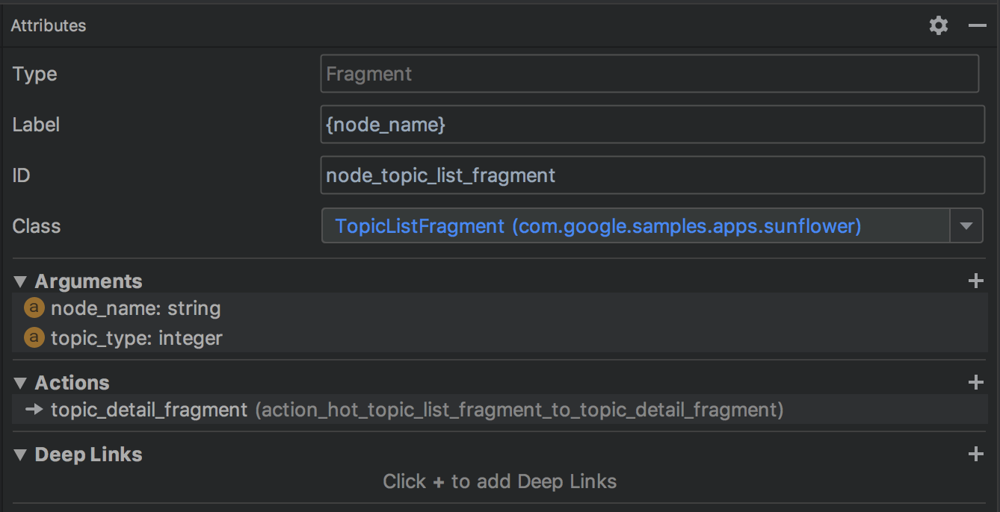

Android Jetpack Navigation 学习笔记。
学习内容来自官方文档 Navigation。
总览
Android Jetpack 中的 Navigation 组件用于 app 导航。Navigation 组件主要有三个部分：
- Navigation graph - 这是一个包括所有导航相关信息的 XML 文件
- destination - 应用中的内容承载区域，简单来说就是 Fragment 或者 Activity
NavHost- 一个空的容器，用于展示 destination- NavHostFragment - Navigation 组件中提供
NavHost实现，用于展示 Fragment
- NavHostFragment - Navigation 组件中提供
NavController- 管理 app 导航
使用 Navigation 组件的好处：
- Handling fragment transactions
- Handling Up and Back actions correctly by default
- Providing standardized resources for animations and transitions
- Implementing and handling deep linking
- Including Navigation UI patterns
- Safe Args
使用 Navigation 组件需要使用 Android Studio 3.3 及以上版本。
用法
准备
第一步是创建 navigation graph 文件。navigation graph 文件位置 res/navigation/nav_graph.xml。可以使用 Navigation Editor 预览和编辑该文件。
A navigation graph is a resource file that contains all of your destinations and actions.
- Destinations are the different content areas in your app
- Actions are logical connections between your destinations that represent paths that users can take
第二步是在 Activity 中添加 NavHost。这是一个空的容器，当用户在 app 内导航时 destination 被添加到该容器或从容器中移除。
navigation host 必须继承自 NavHost。NavHostFragment 是 Navigation 组件的缺省实现，你也可以提供自己的实现。
添加了 NavHostFragment 作为 navigation host。
1 |
|
以上 XML 文件中
android:name- 指定NavHost实现类的名字app:navGraph- 将NavHost跟nav_graph.xml文件关联app:defaultNavHost="true"- 指定NavHost是否处理系统 Back 键- 同一布局中可以有多个
NavHost - 同一布局中只能有一个 default 的
NavHost
- 同一布局中可以有多个
第三步是编辑 navigation graph 文件。在 Editor 中点 “New Destination”，
- 可以创建新的 Fragment 以新建 destination
- 可以从已有的 Fragment 来新建 destination
- 可以创建一个 placeholder destination (占位符，不影响编译)
以下是一个例子。
1 |
|
切换到 Design 模式可以看到4个重要属性：
- Type - 指定 destination 是由 Fragment, Activity 还是其他的某个代码来实现
- Label - 展示 destination 时的标题名
- ID - destination ID，用于在代码中引用这个 destination
- Class - 跟 destination 关联的 Java 类

对 navigation graph 的编辑操作主要有以下几个：
- 指定 start destination，即进入该 Activity 后看到的第一屏界面
- 为 destination 添加连接
完成以上三步后，就可以开始在 app 内导航了。
使用
使用 NavController 导航至 destination。NavController 是在一个 NavHost 范围内进行导航管理的对象。每个 NavHost 都有自己的 NavController。
获取 NavController
Kotlin 代码
- Fragment.findNavController()
- View.findNavController()
- Activity.findNavController(viewId: Int)
Java 代码
- NavHostFragment.findNavController(Fragment)
- Navigation.findNavController(Activity, @IdRes int viewId)
- Navigation.findNavController(View)
导航至 destination
使用 NavController.navigate() 导航至指定的 destination。
- NavController.navigateUp()
- NavController.popBackStack()
高级用法
场景：在用户首次注册流程中，一旦注册成功，就应该从 back stack 中清空所有注册相关的 destination 以免用户退回到这些 destination
场景：循环跳转问题
进阶
Nested graphs
可以将一组 destination 组合成一个 nested graphs。needed graphs 适用于用户注册、滑屏页等场景，可以更好地组织特定流程。
- nested graph 必须有一个 start destination
- nested graph 以外的 destination 只能通过 start destination 来访问这个 nested graph
小技巧：使用
跨 module 跳转
Conditional navigation
根据 文档，可知 Navigation 组件自身并没有真正实现 conditional navigation，而是需要开发者自己使用 ViewModel + NavController 来实现
传参
参数类型
支持的参数类型：
- 基本类型
- string - app:argType=”string”
- Resource Reference - app:argType=”reference”
- Custom Parcelable - app:argType=”
“, where is the fully-qualified class name of the Parcelable - Custom Serializable - app:argType=”
“, where is the fully-qualified class name of the Serializable - Custom Enum - app:argType=”
“, where is the fully-qualified name of the enum
如果参数支持 null 值，可以填 “@null”
Safe Args
混淆配置
1 | @Keep class ParcelableArg : Parcelable { ... } |
其他话题
Navigation 组件内容很丰富。限于时间和精力，我略过了以下内容：
- Deep Link
- 动画
- 手动创建
NavHostFragment - 测试
- 添加新的 destination type
- 如何迁移